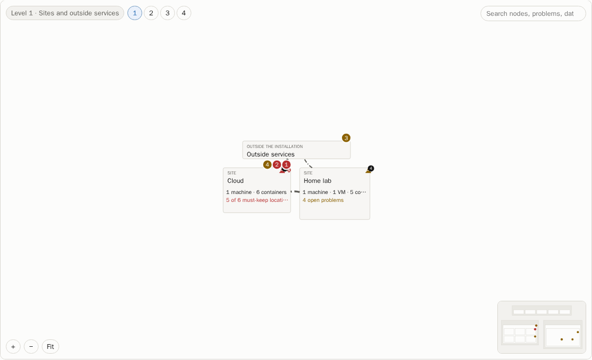
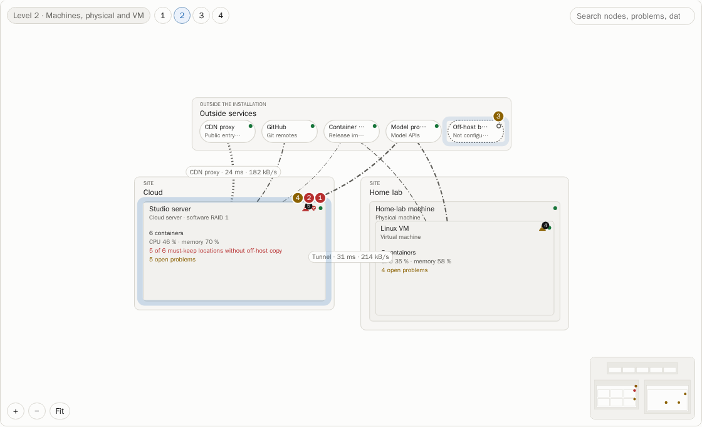
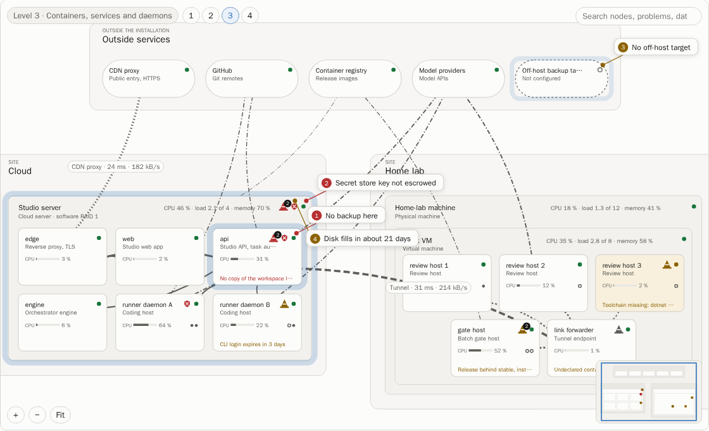
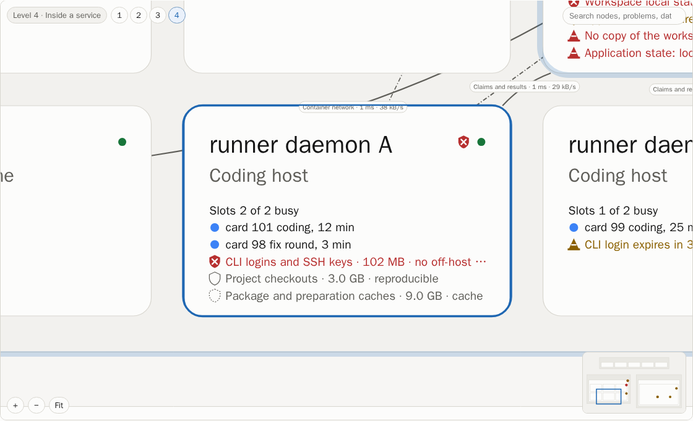
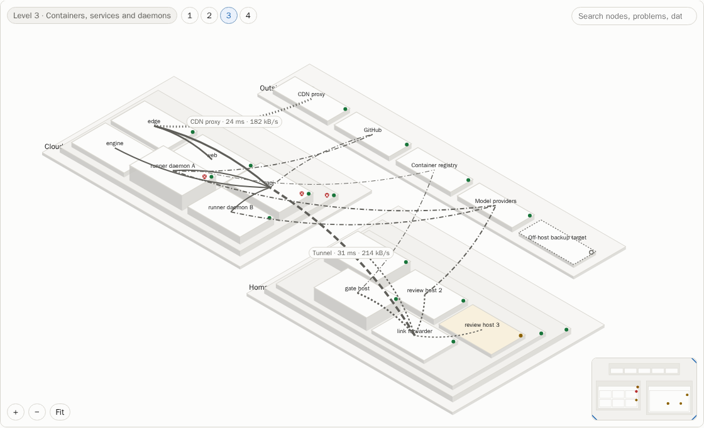

Concept Dossier · AGT-3955 · Live structure canvas
Context and canvas
What the owner asked for, where this concept stands in the hosting area, what the Structure view shows today, what the leading topology maps do well, and how one canvas opens by zoom.
Request
On 17 November 2026 the owner asked for a modern, dynamic view of hosts and containers on a canvas: zoom in, see many kinds of data, have fun, see movement and live updates, best in class. The view is layered by topic: performance and network, backup ("where is data that must be backed up"), storage. The same evening two principles followed. Views and assessments may be produced case by case by LLM calls, authored by personas in roles, and the system works toward goals; backup is such a goal and every place without a backup must be visible. Construction sites, such as a dependency that had to be deployed into containers before work could continue, belong in the system view, pinned to the node they concern.
Position
This Dossier serves the hosting area of the Studio, one of its areas next to deploy and access: one application for everything, as the Nordstern's next horizon states. It continues the deployment structure view, draws what Bereitstellung records, and leaves roles, personas and budgets to the persona team. It decides the canvas renderer and the chart library that AGT-3950 then uses.
| Builds on, with repository path | Relation |
|---|---|
Nordstern, target picture and guard railsdocs/operations/nordstern/index.html, section Next horizon | The single entry to the target picture. The entry for this Dossier in its map, under Next horizon, is slice LSC-10: a concept delivery may change only its own directory, so the entry and the two forward links below are written as a card with their exact text. |
Deployment structure view (AGT-3349) and its product view (AGT-3389)docs/deployment-structure-view/index.html | Carried on: the structure model, the notation, the declared skeleton with observed overlay, the outline panel and the overlays Health, Version and Drift, which become layers. Proposed to be replaced: the SVG renderer and the level switch (D1, D3, D6). The forward link from there to here is part of LSC-10; its recorded decisions stay unchanged. |
Bereitstellungdocs/operations/bereitstellung/index.html | Environments, releases, deploy records and run targets. The canvas draws a running deploy step on the node it runs on. The forward link from there to here is part of LSC-10. |
Persona team (PT-1 to PT-12)docs/persona-team/index.html, sections Catalogue, Scheduling, Budgets, Reporting, Magazine | Persona descriptor and catalogue, scheduling and budget ledger, importance scoring, feeds and magazine. Used as they are; nothing is redefined here. |
Deployment story and Integrierte Plattformdocs/operations/deployment-story/index.htmldocs/operations/integrierte-plattform/index.html | The deployment forms from one machine to many runner hosts, and the one platform from planning to hosting: the machines, roles and boundaries the canvas draws. |
Other Dossiers are named by repository path, not hyperlinked: the concept review reads every file a Dossier links, and its budget belongs to this Dossier's own files (see Dossier files). workbench.json lists them in buildsOn.
| Card | Delivers | State on develop, 20 November 2026 | What this Dossier assumes |
|---|---|---|---|
| AGT-3879 | Instance deploy records API, live release, badges | Not on develop; commits on its own result branches, in a repair round | Deploy step start, step and end records exist per instance and name the host; the canvas shows a running step on that node. |
| AGT-3949 | Deployment dashboard data in /api/deploy/matrix and /api/deploy/cards | Not on develop, no commits | No dependency; the dashboard links to the canvas by node id. |
| AGT-3954 | Observed hosts without declarations, machine kind and nesting, placement file, performance and network facts, data locations with backup coverage, facts for warnings, live deltas | Not on develop; one commit on a result branch | The response shape and delta envelope written in Data the layers need. Where AGT-3954 chooses differently, its shape wins and the client adapter follows. |
| AGT-3950 | Deployment dashboard charts | Not on develop; starts after this card | Uses the chart library decided in D2 and the same tokens, persona specification and budget rules. |
Today
The Structure view of AGT-3389 lives at #/workspace/operations/structure as a lazy standalone component. It positions boxes as DOM elements and draws links in one SVG overlay, offers Host and Container projections, levels 1 to 3 with per-node toggles, the overlays Health, Version, Drift and Load, an outline panel and keys 1 to 3, H, C and Escape. It reads GET /api/v1/operations/structure and polls it every 15 seconds while the tab is visible; no push channel carries structure or telemetry deltas yet. It shows that a structure exists and whether it matches; it shows nothing about storage, backup, traffic or open problems, and nothing moves.
 Overlays, no layers for storage or backup
Overlays, no layers for storage or backup
2adbb4f5d with every API answered by the role-named fixture in capture.mjs; no backend. frontend/src/app/features/structure/ has not changed between that commit and this delivery.Best in class
Leading tools that draw live topology were studied for what makes them work; nothing below copies a look or a brand.
| Kind of tool | What makes it good | What it leaves out for an installation of this size |
|---|---|---|
| Service maps of observability products (for example Datadog, Dynatrace Smartscape, New Relic) | Nodes coloured by health, edges sized by request rate and error rate, click to traces; layout generated from observed calls. | Hosts and VMs are flattened away, so "which disk holds this" and "what shares this machine" are lost; built for hundreds of services, not for eight containers whose placement matters. |
| Node graph panels (Grafana) | Arcs around nodes as gauges, a main and a secondary statistic per node, a data contract of nodes and edges any source can fill. | No nesting, no semantic zoom, no motion, no narrative. |
| Service mesh graphs (Kiali, Linkerd viz) | Animated traffic along edges, protocol and response-time labels, namespaces as boxes, a replay of a past window. | Only what passes the mesh; no storage, backup or host facts. |
| Container topology maps (Weave Scope) | Hosts, containers and processes as switchable views; live metrics sparklines in the node. | One view per level instead of continuous zoom; maintenance stopped. |
| Isometric cloud diagrams (Cloudcraft and similar) | Playful 2.5D blocks people enjoy; height and colour as live cost or load; a diagram people show others. | Labels collide and hit areas shrink once zoomed in; drawings are of declared resources, not of observed state. |
| Infinite canvas tools (Figma, tldraw, Excalidraw) | Smooth pan and pinch, minimap, search to focus, keyboard first, rendering only on change. | No live data at all. |
| Web maps | Semantic zoom: what is drawn changes with scale; labels stay readable at a fixed screen size; tiles render progressively. | Geography instead of topology. |
What this view does better for a small to mid-size installation. It keeps the physical truth (cloud server, physical machine, VM, container) and opens it continuously by zoom; it treats storage, backup and open problems as first-class layers next to performance and health; it pins every construction site to its node with what it blocks and the next step; it lets a persona say what matters, with author, time, model, confidence and the facts it used, and never hides the facts underneath; it animates only causes (work moving, a deploy step, a restart, a link dropping) and replays them; and it keeps a full text outline as the accessible twin of the canvas.
Prototype
Everything from here on is built and can be tried: the live prototype runs on the Dossier's own engine (candidate A) and replays a recording of deltas. The captures on these pages were taken from it by capture.mjs, and verify.mjs checks its controls, keyboard, layers, levels, replay batching, reduced motion, fallback and idle frames in both themes at 390 and 1440 px.
Semantic zoom
One infinite canvas; wheel and pinch zoom around the pointer, drag pans, keys pan, zoom, fit and jump to a level; a minimap moves the view; search focuses a node and flies to it. What is drawn depends on how large a group is on screen, not on a global switch: a group opens when its width passes a threshold (240 px for sites, 330 px for machines, 300 px for VMs, 330 px for a service's inside) and cross-fades from its summary to its children over the next third. Labels keep a minimum screen size and are cut to the width they have; text below 6 px turns into a soft bar. Links attach to the nearest visible node and bundle when both ends collapse into the same pair, so the overview draws a handful of lines instead of every connection.
| Level | Drawn | Summary carried by closed groups |
|---|---|---|
| 1 · Sites and outside services | Cloud site, home lab, outside services, the off-host target | Counts of machines, VMs and containers; missing-backup count; open problems |
| 2 · Machines | Cloud server; physical machine with its VM nested inside | CPU and memory, volume fill and days until full, must-keep locations without copy |
| 3 · Containers, services and daemons | Every container with its gauges, badges and one line for the top problem | Per layer: gauges, mounts, backup state, release, drift |
| 4 · Inside a service | Slots, running cards, gate runs, data locations with backup state, problems | None; this is the leaf |




capture.mjs.2D and 2.5D
Both strongest forms are prototyped on the same engine and switch with an animated projection. 2.5D lifts each service into a block whose height follows CPU (Performance layer) or the size of its mounts (Storage layer): a playful overview that reads at a glance which daemon is busy. Zoomed in, labels float over blocks, hit areas shrink and links cross faces, so detail work stays in 2D. 3D adds orbit controls, occlusion and a 130 kB chunk (three.js, gzip) for no fact that 2.5D cannot show.


Height is CPUcapture.mjs, light theme, 1440 px.